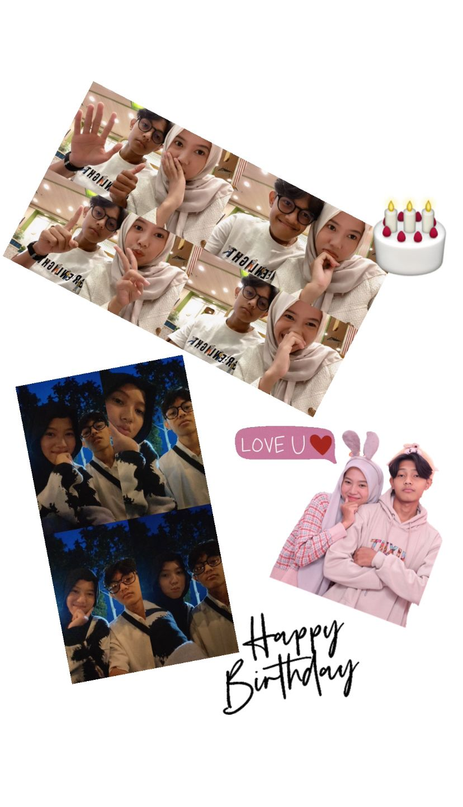
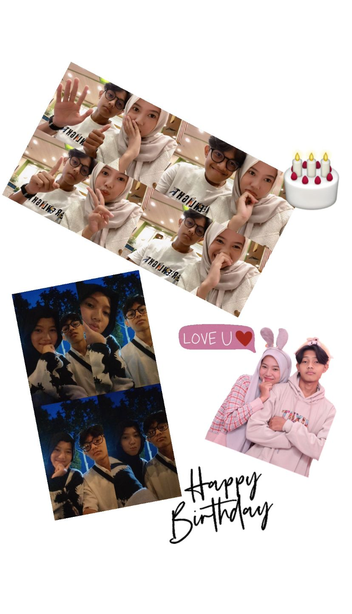

🎶 Klik dulu ya musiknya biar makin unyu💖 🎶
Happy Brithday sayanggg 🎂💖
SELAMAT MENUA SAYANGKU ! untuk laki laki terhebat yang pernah ade temui. ini tahun pertama adengucapkan dan meskipun ucapan ini tidak pernah sampai kepada sayang secara langsung. ade ingin mengucapkan terimakasih kepada ibu kamu yang telah melahirkan laki laki sehebat sayang, lalu membesarkannya sehingga tumbuh menjadi pribadi yang sangat baik. ade juga harus berterimakasih kepada tuhan yang telah menciptakan sayang begitu sempurna. Banyak sekali yang saya syukuri perihal kelahiran sayang, karena berkat sayang dilahirkan ade bisa mengenal sayang, bertemu sayang, dan jatuh cinta dengan sayang. Seiring bertambahnya usia akan banyak sekali hal yang menyakitkan kedepannya, namun ade berharap sayang bisa mengatasi hal tersebut dengan mudah. Sekali lagi terimakasih telah terlahir ke dunia, terimakasih telah tumbuh dengan baik, terimakasih karena pernah mencintai saya yang banyak kurangnya ini. Semua doa baik akan saya doakan. Hanya satu doa yang akan ade sebutkan disini, semoga sayang senantiasa diberi kebahagiaan di setiap harinya dan mampu menjalani apapun yang terjadi di kehidupan ini dengan senyuman. Karena kebahagiaan ade adalah melihat sayang tersenyum. Sekali lagi selamat bertambah usia yaa 💖
 


SEMANGAT TERUS UNTUK KEDAPANYA KERNA ADE INGIN MENJALANI STERUS NYA DENGAN SAYANG SEMOGA ADE BISA SELALU MERAYAKAN SAYANG , I LOVE U🌸